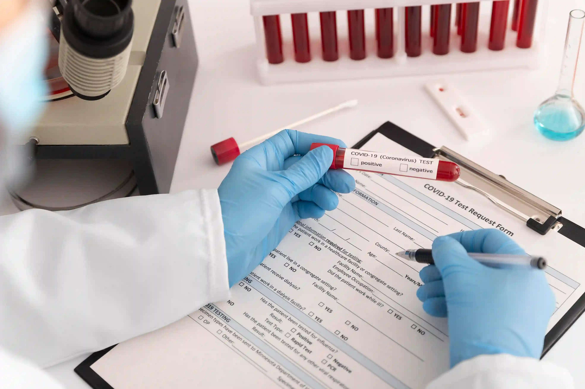

Published: 12 May 2026 | Reviewed by: Gani Hospitals Pathology & Laboratory Medicine Team
Interpreting reports from a diagnostic lab in Ramanathapuram can be confusing, especially with complex medical terms, values, and reference ranges. Many patients struggle to understand their blood test results guide without clear explanation. At Gani Hospitals Laboratory, our experts ensure every report is easy to understand. This guide from our clinical lab Ramnad explains common blood tests, what normal and abnormal results mean, and when to consult your doctor. Whether your report is from our pathology lab near me or another lab, this guide helps you understand your health results with confidence.
A lab report from any diagnostic lab in Ramanathapuram contains your test results alongside a reference range — the values considered normal for that test in a healthy adult. A result within the reference range is normal. A result marked with H (high), L (low), or a flag indicates a value outside the normal range that your doctor needs to review. Single abnormal values do not always mean disease — always discuss your complete blood test results guide with your doctor at Gani Hospitals laboratory or your treating physician before drawing any conclusions, as results must always be interpreted alongside your symptoms, medical history, and other investigations.
Laboratory medicine is the backbone of modern healthcare. More than 70 per cent of all medical decisions — from diagnosing diabetes to monitoring chemotherapy — are informed by laboratory results. Yet most patients receive their reports with little to no explanation of what the values mean, why they matter, or what action is required. This information gap causes unnecessary anxiety when results are mildly abnormal, and dangerously false reassurance when the significance of an abnormal finding is not understood.
Our Gani Hospitals laboratory team processes thousands of tests every month at our diagnostic lab in Ramanathapuram. Our pathologists are frequently asked by patients: what does this number mean? Is this value dangerous? Why is my result flagged? This guide addresses every one of those questions systematically. It is the blood test results guide our clinical team wishes every patient had before opening their report. Used alongside a consultation with your doctor, this knowledge makes you a better-informed participant in your own healthcare decisions.
Every report from our diagnostic lab in Ramanathapuram is reviewed and authorised by a board-certified MD pathologist before issue.
Our Gani Hospitals laboratory processes over 200 test types in-house — no outsourcing delays for routine haematology, biochemistry, or microbiology panels.
Routine blood reports from our clinical lab Ramnad are ready within 4 to 6 hours of sample receipt. Urgent panels processed within 2 hours.
Internal and external quality control checks run daily at our pathology lab near me to ensure machine calibration and result accuracy.
Reports shared digitally via WhatsApp and email with clear reference ranges and flagged values highlighted for easy reading.
Patients at our clinical lab Ramnad can request a direct pathologist consultation to explain complex or unexpected findings in their report.
Before interpreting individual test values, it helps to understand the standard structure of a report from any accredited pathology lab near me. Every well-formatted lab report from our Gani Hospitals laboratory contains the following sections:
Name, age, gender, and patient ID. Always verify this matches your details before reading results — reports are patient-specific.
Date and time of sample collection and report issue. Relevant for fasting tests — confirms whether fasting was observed at the correct time.
The name of the investigation performed — for example, Haemoglobin, Serum Creatinine, or TSH. Some reports list the panel name and sub-tests beneath it.
The measured value from your sample. This is the number that gets compared against the reference range to determine if it is normal, low, or high.
The unit in which the result is expressed — g/dL, mg/dL, IU/L, mEq/L, and so on. Units matter because the same number means very different things in different units.
The normal range for that test based on age and gender. A result within this range is considered normal. Results outside this range are flagged as H (high) or L (low).
H, L, HH (critically high), or LL (critically low) flags alert the doctor to values requiring attention. Our diagnostic lab in Ramanathapuram also adds interpretive comments for complex results.
The authorising MD pathologist's name and signature confirms the report is validated. This is a mandatory component of every report from our Gani Hospitals laboratory.

The CBC is the most commonly performed test at any diagnostic lab in Ramanathapuram. It measures the three major components of blood — red blood cells, white blood cells, and platelets — along with several derived values that together give a comprehensive snapshot of your blood's health. Our blood test results guide for the CBC covers the most clinically significant parameters:
| Parameter | Normal Range (Adult) | Low Value May Indicate | High Value May Indicate |
|---|---|---|---|
| Haemoglobin (Hb) | Men: 13–17 g/dL Women: 12–15 g/dL |
Anaemia (iron, B12, or folate deficiency), blood loss, bone marrow disorder | Polycythaemia, dehydration, lung disease, high altitude |
| RBC Count | Men: 4.5–5.9 million/μL Women: 4.0–5.2 million/μL |
Anaemia, haemorrhage, haemolysis | Polycythaemia vera, dehydration |
| PCV / Haematocrit | Men: 40–52% Women: 36–47% |
Anaemia, overhydration | Dehydration, polycythaemia |
| MCV (Mean Corpuscular Volume) | 80–100 fL | Iron deficiency anaemia, thalassaemia | B12 / Folate deficiency, liver disease, hypothyroidism |
| WBC / TLC (Total Leucocyte Count) | 4,000–11,000 cells/μL | Viral infection, bone marrow suppression, immunosuppressant drugs | Bacterial infection, inflammation, leukaemia, corticosteroid use |
| Neutrophils | 40–70% of WBC | Viral illness, severe bacterial infection (sepsis), bone marrow failure | Bacterial infection, physiological stress, corticosteroids |
| Lymphocytes | 20–40% of WBC | HIV, steroid therapy, bone marrow failure | Viral infections (dengue, COVID-19), chronic lymphocytic leukaemia |
| Eosinophils | 1–6% of WBC | Rarely significant when low | Allergic conditions, parasitic infections, asthma, drug reactions |
| Platelets (PLT) | 1,50,000–4,50,000/μL | Dengue fever, ITP, bone marrow suppression, hypersplenism | Reactive thrombocytosis (infection, iron deficiency), essential thrombocythaemia |
| ESR (Erythrocyte Sedimentation Rate) | Men: 0–15 mm/hr Women: 0–20 mm/hr |
Rarely significant when low | Infection, inflammation, autoimmune disease, anaemia, malignancy |
Glucose-related investigations are among the most frequently requested tests at our clinical lab Ramnad. Understanding the difference between the various types of glucose tests is essential for accurate interpretation of your lab report interpretation Ramanathapuram:
Collected after a minimum 8-hour fast. Directly measures glucose in the absence of recent food intake.
| Category | FBS Value (mg/dL) | Interpretation |
|---|---|---|
| Normal | 70 – 99 | Normal No action required |
| Pre-diabetes | 100 – 125 | Borderline Lifestyle changes recommended |
| Diabetes | 126 and above | High Confirm with repeat test + HbA1c |
Collected exactly 2 hours after a full meal. Assesses how well the body clears glucose after eating.
| Category | PPBS Value (mg/dL) | Interpretation |
|---|---|---|
| Normal | Less than 140 | Normal |
| Pre-diabetes | 140 – 199 | Borderline |
| Diabetes | 200 and above | High |
Reflects the average blood glucose over the past 2 to 3 months. Not affected by recent meals or fasting status — the single most reliable diabetes monitoring test available at our diagnostic lab in Ramanathapuram.
| Category | HbA1c (%) | Interpretation |
|---|---|---|
| Normal | Below 5.7 | Normal |
| Pre-diabetes | 5.7 – 6.4 | Borderline |
| Diabetes — Controlled | 6.5 – 7.0 | Target for most diabetics |
| Diabetes — Poorly Controlled | Above 7.0 | Medication / lifestyle review needed |
A lipid profile ordered by your doctor and processed at our pathology lab near me in Ramanathapuram measures the various fat components in your blood that determine your cardiovascular risk. This is one of the most important panels in your blood test results guide:
| Parameter | Desirable Level | Borderline | High Risk |
|---|---|---|---|
| Total Cholesterol | Below 200 mg/dL | 200 – 239 mg/dL | 240 mg/dL and above |
| LDL Cholesterol (Bad cholesterol) | Below 100 mg/dL | 100 – 129 mg/dL | 130 mg/dL and above |
| HDL Cholesterol (Good cholesterol) | Above 60 mg/dL | 40 – 59 mg/dL | Below 40 mg/dL (low HDL is a risk) |
| Triglycerides | Below 150 mg/dL | 150 – 199 mg/dL | 200 mg/dL and above |
| VLDL | 2 – 30 mg/dL | 30 – 40 mg/dL | Above 40 mg/dL |
LFT is a panel of tests that assesses how well your liver is functioning. It is routinely requested at our clinical lab Ramnad for patients with jaundice, fatigue, suspected fatty liver, alcohol history, or those on long-term medications. Here is your blood test results guide to the LFT panel:
| Test | Normal Range | Elevated Value May Suggest |
|---|---|---|
| SGOT / AST | 10 – 40 IU/L | Hepatitis, fatty liver, alcohol-related liver disease, muscle injury, cardiac damage |
| SGPT / ALT | 7 – 56 IU/L | More liver-specific than AST — hepatitis, non-alcoholic fatty liver disease, drug-induced liver injury |
| ALP (Alkaline Phosphatase) | 44 – 147 IU/L | Bile duct obstruction, gallstones, liver disease, bone disorders |
| GGT (Gamma-GT) | 8 – 61 IU/L | Alcohol consumption, bile duct disease, fatty liver, enzyme-inducing medications |
| Total Bilirubin | 0.2 – 1.2 mg/dL | Jaundice (above 2.5 mg/dL visible), haemolysis, gallstones, hepatitis, cirrhosis |
| Direct Bilirubin | 0 – 0.3 mg/dL | Obstructive jaundice, cholestasis, bile duct blockage |
| Serum Albumin | 3.5 – 5.0 g/dL | Low albumin reflects chronic liver disease, malnutrition, or severe illness |
| Total Protein | 6.0 – 8.3 g/dL | Low in malnutrition, liver failure; high in dehydration, multiple myeloma |
KFT evaluates how efficiently your kidneys filter waste from the blood. Our lab report interpretation Ramanathapuram guide for kidney function covers the key parameters routinely reported at our pathology services Ramnad department:
| Test | Normal Range | Abnormal Value Significance |
|---|---|---|
| Serum Creatinine | Men: 0.74 – 1.35 mg/dL Women: 0.59 – 1.04 mg/dL |
Rising creatinine indicates declining kidney filtration. Values above 1.5 mg/dL need nephrologist review at a diagnostic lab in Ramanathapuram with follow-up. |
| Blood Urea Nitrogen (BUN) | 7 – 20 mg/dL | Elevated in kidney disease, dehydration, high-protein diet. Low in liver disease, malnutrition. |
| Uric Acid | Men: 3.5 – 7.2 mg/dL Women: 2.6 – 6.0 mg/dL |
High levels cause gout and kidney stones. Very common finding in patients with a high seafood and meat diet in coastal Ramanathapuram. |
| eGFR (Estimated Glomerular Filtration Rate) | Above 90 mL/min/1.73m² | Directly measures kidney filtering capacity. Values below 60 indicate chronic kidney disease and require urgent specialist review from our Gani Hospitals laboratory. |
| Serum Sodium | 136 – 145 mEq/L | Low sodium causes confusion, seizures. High sodium indicates dehydration. Critical values require emergency attention. |
| Serum Potassium | 3.5 – 5.1 mEq/L | High potassium (above 6.0) is a cardiac emergency. Low potassium causes muscle weakness and arrhythmias. Our clinical lab Ramnad flags all critical potassium values immediately. |
Thyroid tests are among the most frequently requested at our pathology lab near me in Ramanathapuram — especially in women, where thyroid disorders are disproportionately common. Here is how to read the thyroid panel in your blood test results guide:
| Test | Normal Range | Interpretation Guide |
|---|---|---|
| TSH (Thyroid Stimulating Hormone) | 0.4 – 4.0 mIU/L | TSH is the primary screening test. High TSH = hypothyroidism (underactive thyroid). Low TSH = hyperthyroidism (overactive thyroid). The most sensitive indicator available at our diagnostic lab in Ramanathapuram. |
| Free T4 (Thyroxine) | 0.8 – 1.8 ng/dL | Low T4 with high TSH confirms hypothyroidism. High T4 with low TSH confirms hyperthyroidism. |
| Free T3 (Triiodothyronine) | 2.3 – 4.2 pg/mL | Most active thyroid hormone. Evaluated when T4 does not explain clinical symptoms or when hyperthyroidism pattern is suspected. |
Vitamin and mineral deficiency testing has become one of the most requested panels at our Gani Hospitals laboratory as awareness of nutritional health has grown across Ramanathapuram. Our medical test results explained guide for these tests:
| Test | Normal Range | Deficiency Significance |
|---|---|---|
| Vitamin D (25-OH) | Sufficient: 30 – 100 ng/mL Insufficient: 20 – 29 ng/mL Deficient: Below 20 ng/mL |
Causes bone pain, muscle weakness, fatigue, and immune dysfunction. Extremely prevalent in Ramanathapuram despite year-round sun — primarily due to indoor work and skin coverage habits. |
| Vitamin B12 | 200 – 900 pg/mL | Below 200 causes nerve damage, megaloblastic anaemia, and cognitive changes. Very common in vegetarian patients from the Ramnad district. Processed by our pathology services Ramnad team routinely. |
| Serum Ferritin | Men: 24 – 336 ng/mL Women: 11 – 307 ng/mL |
The most sensitive indicator of iron store depletion — falls before haemoglobin drops. Low ferritin even with normal Hb = iron deficiency requiring supplementation. |
| Serum Iron | 60 – 170 mcg/dL | Low serum iron with high TIBC confirms iron deficiency anaemia — the most common nutritional deficiency seen at our clinical lab Ramnad. |
| Calcium | 8.5 – 10.5 mg/dL | Low calcium causes muscle cramps and tetany. High calcium may indicate hyperparathyroidism or malignancy. Critical values are flagged immediately. |
A urine routine examination (urine R/M) is one of the simplest and most informative tests at any pathology lab near me. It screens the kidneys, urinary tract, and metabolic status simultaneously. Here is how to read the key components in your report from our diagnostic lab in Ramanathapuram:
Even the most advanced diagnostic lab in Ramanathapuram cannot compensate for poor patient preparation. These tips from our Gani Hospitals laboratory pathology team ensure your results are accurate and meaningful:
Fast for 10 to 12 hours for glucose, lipid, and liver tests. Continue drinking plain water. Skipping water during the fast makes veins collapse and samples harder to collect.
Inform the phlebotomist and pathologist of every medicine you are taking. Biotin supplements, anticoagulants, and corticosteroids interfere with several test methodologies.
Strenuous exercise within 24 hours before your test raises creatine kinase, creatinine, and uric acid — potentially creating false abnormal results in your kidney and muscle enzyme panel.
Alcohol transiently elevates GGT, triglycerides, and liver enzymes — common sources of unnecessary follow-up investigation when the cause is simply pre-test alcohol consumption.
Most reference ranges are established based on morning samples after overnight fast. Afternoon collection for fasting tests reduces the reliability of comparison to reference values.
Hormone tests (LH, FSH, progesterone) are cycle-phase specific. Inform our pathology lab near me team of the day of your cycle when booking reproductive hormone tests.
Year-on-year trending is more valuable than any single result. Our laboratory test guide Tamil Nadu clinicians use serial values to identify meaningful changes versus normal variation.
No single lab value confirms or rules out a diagnosis in isolation. Use this blood test results guide as a foundation — then discuss every flagged result with your treating physician.
For additional evidence-based guidance on laboratory test interpretation, refer to these internationally trusted health authorities:
These resources complement the expert guidance provided by our MD pathologists at Gani Hospitals laboratory — the most trusted diagnostic lab in Ramanathapuram for accurate, reliable pathology services across the Ramnad district.
A lab report is not just a piece of paper — it is a window into your body's internal chemistry. When you understand what your results mean, you become a more active, informed participant in your healthcare. Our blood test results guide is designed to bridge the gap between the technical language of pathology and the practical knowledge every patient deserves to have. The expert pathologists at our diagnostic lab in Ramanathapuram are committed to transparent, accurate, and clinically meaningful reporting that empowers both patients and their doctors.
Whether you are reviewing a CBC for the first time, trying to understand why your creatinine is flagged, or monitoring your HbA1c over time, our pathology lab near me team at Gani Hospitals laboratory is here to provide the accuracy, clarity, and expert consultation your health requires. Book your next test at our clinical lab Ramnad and receive results you can trust — with the knowledge to act on them confidently.
Also explore: Home Blood Test Collection Service in Ramanathapuram | Full Body Health Checkup Packages at Gani Hospitals | Abdominal Scan and Radiology Services | Book a Lab Test at Gani Hospitals
Accurate results. MD pathologist review. Same-day digital reports.
The most trusted diagnostic lab in Ramanathapuram — serving the Ramnad district with clinical excellence.
Gani Hospitals laboratory is the most trusted diagnostic lab in Ramanathapuram, offering over 200 tests with MD pathologist oversight, same-day digital reports, and direct integration with specialist clinical care. Our pathology lab near me serves patients across the Ramnad district with ICMR-compliant quality standards.
A flag of H (high) or L (low) in your report from our clinical lab Ramnad means your result falls outside the normal reference range for that test. This does not automatically mean disease — a single mildly abnormal value must always be interpreted alongside your symptoms, medical history, and other test results. Use this blood test results guide as a starting point and discuss flagged values with your doctor at Gani Hospitals laboratory.
FBS (Fasting Blood Sugar) measures glucose after an overnight fast. PPBS measures glucose two hours after a meal. HbA1c reflects average glucose over the past 2 to 3 months and is not affected by recent food intake. All three are available at our diagnostic lab in Ramanathapuram as part of our diabetes monitoring panel at Gani Hospitals laboratory.
The most important values in a KFT report from our pathology lab near me are serum creatinine, eGFR, and potassium. Creatinine above the normal range and eGFR below 60 mL/min indicate reduced kidney function requiring specialist follow-up. Potassium above 6.0 or below 2.5 mEq/L are critical values our clinical lab Ramnad flags and communicates to your doctor immediately.
A high TSH means your thyroid gland is underactive (hypothyroidism) — the pituitary gland is producing extra TSH to stimulate a sluggish thyroid. It is not a sign of an overactive thyroid. This counter-intuitive result confuses many patients. Our pathology services Ramnad team at Gani Hospitals laboratory includes interpretive comments on thyroid reports to avoid this common misunderstanding.
Yes. Patients at our diagnostic lab in Ramanathapuram can request a direct consultation with an MD pathologist from our Gani Hospitals laboratory team to explain complex, unexpected, or concerning findings in their report. Contact our clinical lab Ramnad helpline to arrange your consultation.